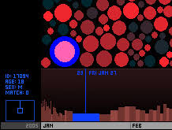

Golan Levin
The Dumpster
2006 & 2026

The Dumpster is an interactive website that turns thousands of real online breakup stories into a large visual database. The stories are represented through different shapes, colors, and connections that the viewer can explore. Instead of reading the stories one by one, you can see patterns between them and explore how people talk about relationships and breakups online. The project creates a visual map of the way we talk about dating.